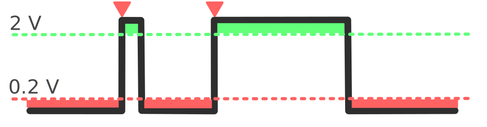

Monophonic Input
Accepts a single voltage.
Accepts a single voltage.
Accepts a single voltage.

Takes a trigger value as an input. This works as a Schmitt Trigger.
When voltage moves from a low voltage threshold (0.2V) through a high voltage threshhold (2V) the trigger will activate. The trigger wont be able to activate again until it moves back below the low voltage threshhold
Outputs monophonic voltage
P
Can accept monophonic and polyphonic voltages.
Can output monophonic and polyphonic voltages.